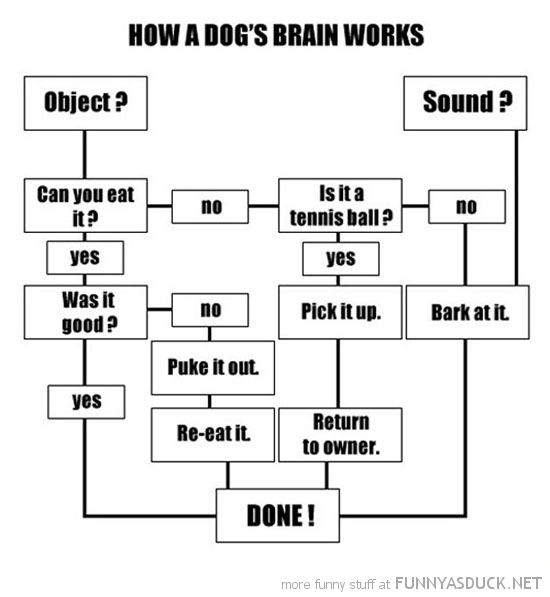

Lets Discuss... Shall We?
The human brain is a very interesting thing. We are able to think faster, better, and become more complex than most beings. We are all unique in many ways our minds are no exception. Dr. Anthony Gregorc work has created a mind styles guide that helps us to categorize what type of thinker we are.
What am I?
There is a test you cant take to figure out what your thinking style is, ill leave the link at the bottom, so you can go after your done reading. Mine was tied for both abstract random and concrete random. Dr. Gregorc says that no one has a pure thinking style, we are comprised of all of them but have a stronger connection with one or more. The concrete quality refers to the idea of “it is what it is”, where abstract refers to “its not always what it seems”. For me Life is all about balance and finding that perfect flow, so it only makes sense that I would naturally flow between these two based a situation. Lets look at the phrase “The sky is blue”, my concrete side wants to say yes the sky is blue, but my abstract side wants to argue, that our eyes are seeing the reflected color that is bouncing off surface of the actual sky and all other colors are being absorbed. So to our human eyes the sky looks blue but if we had a different visual concept the sky could be a completely different color.
As far as random goes, I do prefer things to be a little bit more random then so set in their ways. Even when getting this assignment I didn’t just start writing and follow it step-by-step question-by-question, I did it randomly, writing out words, flowing from there, and sort of piecing it all together.
Why is this Important?
The reason this is so important is, once you know what kind of my style you have you can start to understand how you learn. Below I have included an image from Dr. Gregorc’s website explaining what each mind style is and what works best for them.
Fixed vs. Growth Mindset
Lastly I’d like to say a few words about the concept of fixed and growth mindset. Fixed mindset is the idea that intelligence is static and doesn’t change, whereas growth mindset is the idea that intelligence can be developed and is constantly changing. I feel that it is important to constantly be learning and pushing yourself to reach new heights. Everybody has it in them to learn and grow but sometimes you get lost and become stagnant; it’s important to realize when that happens to try to shake yourself free. I’m going to include me link to Fixed vs. Growth: The Two Basic Mindsets That Shape Our Lives by Maria Popova at the bottom so you can go and check it out.

Here are the links that I promised: Check your personal thinking style with the Thinking Style Test, Dr. Gregorc's Explanation of the styles, Fixed vs. Growth Mindest, and last but not least a link a TedTalk about color and how it works What is Color?.
Your Thinking Style and Learning
Brain Points
How dogs brains work